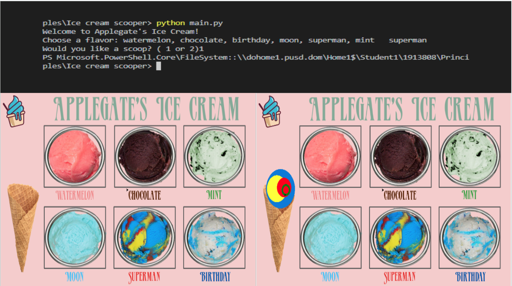
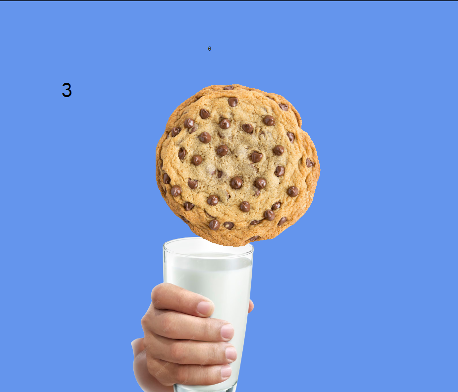
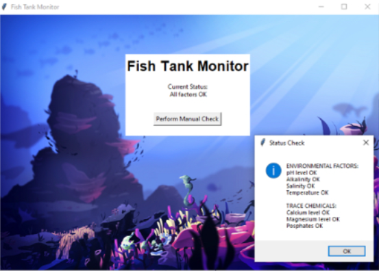
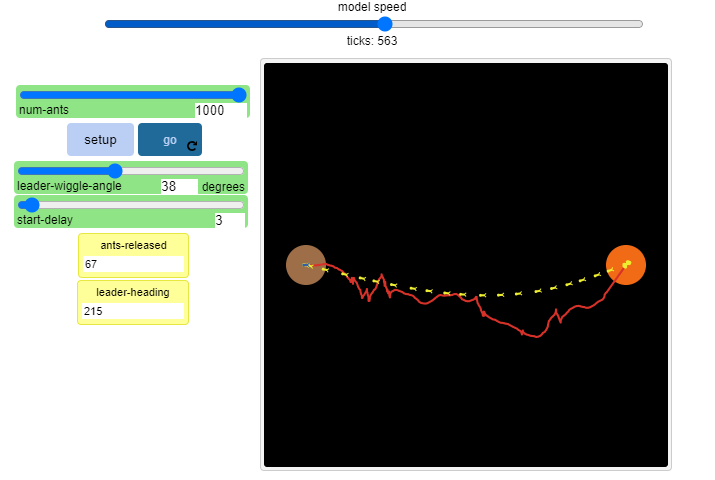

Home
Portfolio
About Me
This is my Portfolio Page!

My First project for 1.19. We created an ice cream maker. We used animation, user input (typing in the flavors) and the turtle would draw the ice cream cone. We added 6 flavors, and each had complex compenents (sprinkles, chocolate chips, and mixed flavors). You could also choose to stack 2 scoops or 1 scoop.

Our cookie monster game for 1.2.5. The goal was for the cookies to fall into the glass. We used lists, animation, and a colored background to add more the the game. We also had user inputs, in which the user would have to direct the milk glass using the WASD keys. We also had a timer and score counter to cound the cookies. Each colors of cooke was worth 1 point all the way to 3 points. They drop randomly.

This is my Scratch project. It was a platformer, and me any teammate added levels, character sprites and a timer. It is about a man named Fred, who has to go as far as possible before running out of air (oh no!). We met the requirements by using counters, animation, multiple backgrounds for level design, change of costume, input, sounds, and events.
">

This is my fish tank project in which we found issues and virus's in software which had some issues. Someone had installed malware on a company computer which was making the code fautly. We fixed them issues using the debugging tool and running the code over and over until it eventually was free of issues.

This is my 4.1.4 project in which we utilized a simulation from netlogo. The purpose of the simulation was to showcase how ants are able to find their food sources and eventually make a path to the food source which gets more straight overtime. We change around values on the simulation and found different results, for example the turn angle change how many degrees the leader ant would turn. We also found the results to be random, with each run of the simulation being completely unique. The model is not an accurate representation of ants finding food but it does serve as a good mathmatical representation.
